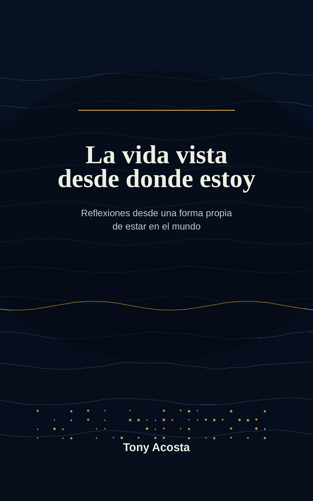

TifloAcosta App
Recursos de accesibilidad y tecnología, organizados para llegar a ellos sin perderse por el camino.
Buscar recursos
Novedades
Explorar recursos
Canal TifloAcosta en YouTube
Accede al catálogo completo de vídeos de TifloAcosta desde una pantalla pensada para buscar, ordenar y recorrer el canal con comodidad.
Mi libro

La vida vista desde donde estoy
Reflexiones desde una forma propia de estar en el mundo.
Una colección de textos sobre la infancia, la ceguera, la memoria, la amistad, la dignidad, los miedos, la vida sencilla y esas pequeñas cosas que a veces entendemos mejor cuando dejamos de correr.
No es un manual ni unas memorias al uso. Es, sencillamente, mi manera de mirar algunas de las cosas que nos pasan a todos.
Para evitar problemas de compra en móviles, la edición Kindle se abre en la web de Amazon. Después de comprarla, podrás acceder al libro desde Kindle.
Contacto y redes
Sobre Tony
Tony Acosta es el autor del libro y la persona que presenta los contenidos y vías de contacto de TifloAcosta reunidos en esta aplicación.
Contacto
Sígueme
Escucha el podcast
Los enlaces de esta sección, del catálogo, de Amazon y de YouTube abren servicios externos, sujetos a sus propias condiciones y prácticas de privacidad.
Privacidad y accesibilidad
Privacidad
La app guarda en este navegador el idioma, los favoritos y los ajustes visuales. No necesitas crear una cuenta. Al visitar la app se carga GoatCounter para medir el uso del sitio y OneSignal para ofrecer las notificaciones; si activas estas últimas, el navegador solicita tu permiso. Los enlaces externos pueden recibir información técnica habitual de la navegación.
Accesibilidad
La app usa encabezados, etiquetas y controles nativos, incluye un enlace para saltar al contenido y avisos para lector de pantalla. Respeta preferencias del sistema y permite ajustar tamaño, contraste, espaciado y grosor del texto. Si encuentras una barrera, puedes comunicarla mediante las opciones de contacto anteriores.
Configuración
Accesibilidad visual
La app respeta el tamaño y el modo de color del sistema. Además, puedes guardar aquí preferencias propias para TifloAcosta.
Instalar la app
En iPhone o iPad, abre TifloAcosta App en Safari y utiliza Compartir > Añadir a pantalla de inicio. En navegadores compatibles de otros sistemas puede aparecer una opción equivalente de instalación.
Notificaciones
Recibe avisos cuando haya nuevos recursos, vídeos o novedades importantes. Solo se activarán si tú lo decides.
Actualización
Versión actual: 1.5